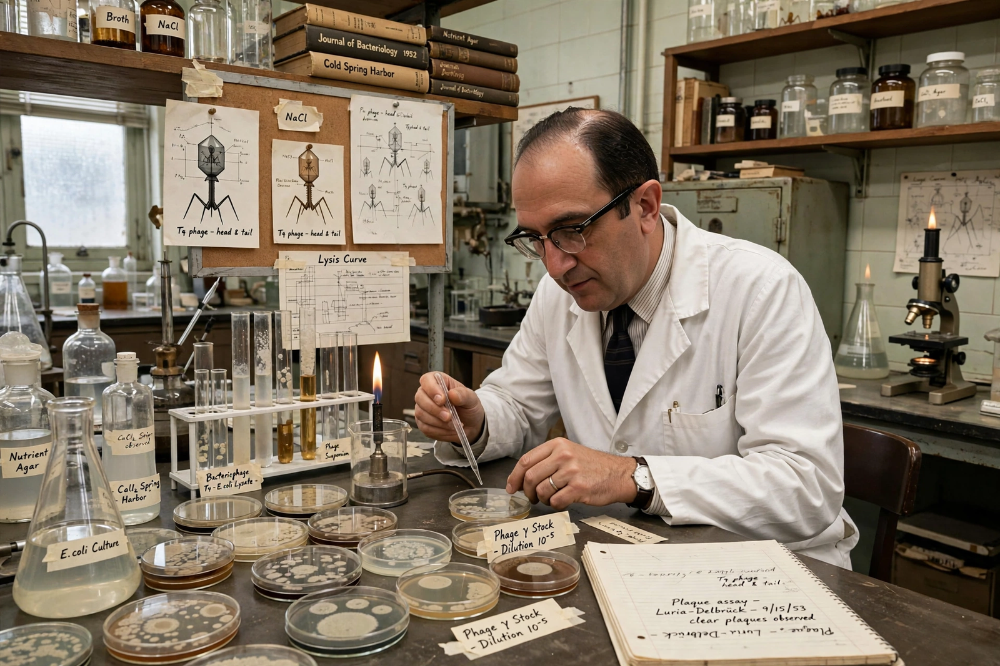

| Born | August 13, 1912 Turin, Italy |
|---|---|
| Died | February 6, 1991 (aged 78) Lexington, Massachusetts, U.S. |
| Alma mater | University of Turin |
| Known for | Luria–Delbrück experiment; bacteriophage genetics |
| Awards | Nobel Prize in Physiology or Medicine (1969); National Book Award (1974) |
| Fields | Molecular biology, microbiology |
| Institutions | Indiana University; University of Illinois; MIT |
Salvador Edward Luria (born Salvatore Edoardo Luria; August 13, 1912 – February 6, 1991) was an Italian-American microbiologist and a pioneer of molecular biology. He shared the 1969 Nobel Prize in Physiology or Medicine with Max Delbrück and Alfred Hershey for discoveries concerning the replication mechanism and genetic structure of viruses.
Born in Turin to a Sephardic Jewish family, Luria trained in medicine there and studied physics in Rome, where he met Enrico Fermi. Fleeing Fascist racial laws, he emigrated to the United States in 1940. With Delbrück, whom he met at Vanderbilt, he founded the informal Phage group centred on summer courses at Cold Spring Harbor Laboratory.
The Luria–Delbrück experiment (1943) used a fluctuation test on bacterial resistance to bacteriophages to demonstrate that mutations arise randomly before selection acts, rather than in response to it — a foundational result for genetics. Luria also discovered bacterial restriction and modification systems through work on phage host range. He spent most of his later career at MIT, where he founded the Center for Cancer Research, and his 1973 autobiographical essay collection A Slot Machine, a Broken Test Tube won a National Book Award.
Categories: 1912 births | 1991 deaths | Nobel laureates in Physiology or Medicine | Molecular biologists